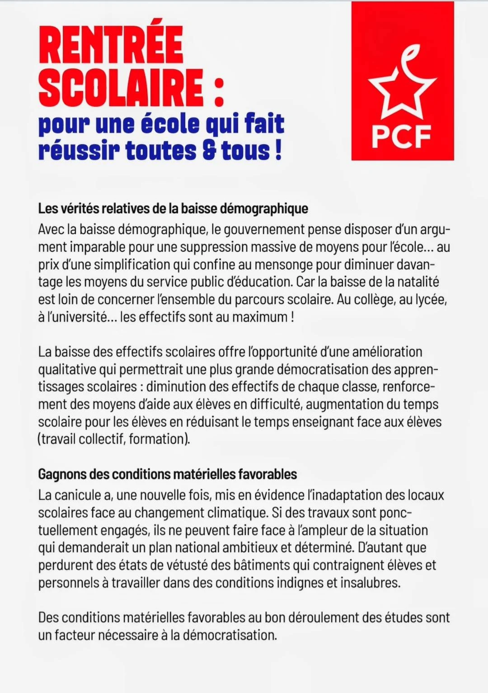

Tract
« Rentrée scolaire : pour une école qui fait réussir toutes & tous ! »
Date indiquée par Facebook · 31 août 2026
Repères éditoriaux
Pour la rentrée, le PCF propose de réduire les effectifs par classe, de renforcer l’aide aux élèves en difficulté et d’améliorer les conditions matérielles d’étude. Le tract défend aussi la suppression de Parcoursup et de MonMaster et présente le projet communiste pour l’école de demain.

Sources
Archive rouge · document diffusé sur Facebook · AR-0002-FB-00704
À lire aussi · Coupes budgétaires : le sacrifice de la recherche et l’enseignement supérieur public · Le lien d’origine